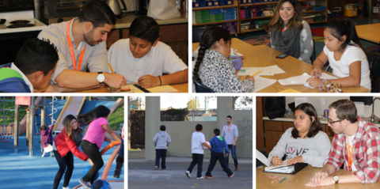
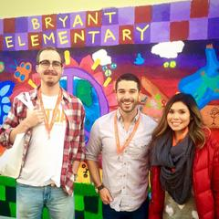

FIRST ORDER SAVINGS!
★ Reviews
Have you heard the story of how KUTOA was founded? You likely already know KUTOA's founder, Joey Grassia, but the real credit goes to Joey's mother, Alice.
While it was Joey's travels in Southeast Asia and his personal pursuit of a healthy diet that brought the issue of proper nutrition to light, it was the love of his mother that made his dream possible.
Although Alice was tragically taken from her family and friends, it is in honor of Alice that Joey founded KUTOA. Now, 6 years since Alice's passing, it is in her memory - and by way of her love - that KUTOA is swiftly approaching 1 million children fed.
In the words of French novelist, Honore de Balzac, "A mother's happiness is like a beacon, lighting up the future but reflected also on the past in the guise of fond memories."
Every year, on the Tuesday following Thanksgiving, the world comes together for one common purpose: to celebrate generosity and selflessness. It’s a simple, yet effective way to give back during the holiday season and there are no shortage of ways to participate! Whether it’s through random acts of kindness or by donating your time, truly everyone can find their own individual ways to celebrate giving.
As Giving Tuesday grew closer and closer, the KUTOA Team began to consider what it would do this year to give back. Knowing that we wanted to volunteer our time locally in San Francisco, we began searching the city over for the right organization to partner with this holiday season. While there were many excellent organizations to choose from, one in particular that attracted our attention was Mission Graduates. This organization works exclusively within San Francisco’s Mission District to provide the necessary guidance and motivation to its students in order for them to pursue higher education. Working directly to ensure a happier and more prosperous life for children of all ages, KUTOA couldn’t resist the opportunity to get involved with this organization.
Soon after reaching out, Mission Graduates informed us that we would be helping to assist their existing program in Bryant Elementary School, specifically with a classroom of 4th graders. As we arrived at Bryant Elementary for their after school program, we were welcomed by Mission Graduates and their ecstatic students with open arms! Our time spent with the 4th graders of Bryant Elementary was equally as fun and entertaining as it was educational, with us spending good portions of our time practicing multiplication, experimenting with science, and getting some quality exercise and nutrition in the process.
As a team, we were looking for an opportunity to volunteer while imparting some beneficial guidance or motivation, and for this Mission Graduates was the perfect outlet! Not only did we get out of the office and shake off our cobwebs, but we got to positively impact the children of our local community in the process. This is only one example however of ways you can give back and enjoy your time spent doing so. We all have our own interests, hobbies, skills and experiences. The only thing left is to decide where you want to make your greatest impact?
We would like to thank Mission Graduates for being so welcoming to KUTOA this Giving Tuesday. Mission Graduates is doing crucial work to ensure that all its students have the skills necessary to pursue education. We look forward to working with Mission Graduates in the future!